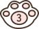
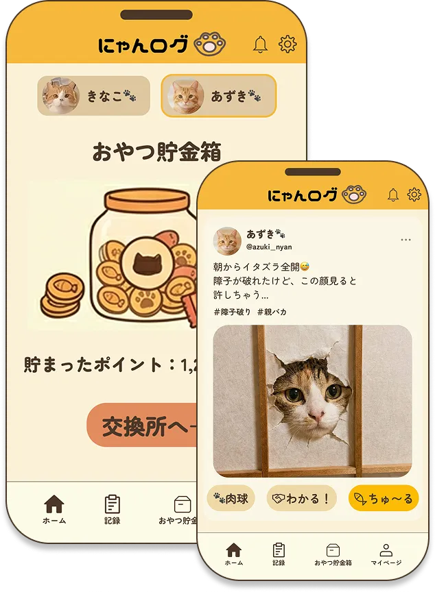

「評価」ではなく「共感」で繋がるSNS機能
数字や映えを気にする必要はありません。ここは、猫好き同士が親バカ全開でニヤニヤするための優しい世界です。
世界で一番、
うちの子が愛おしい。

世界で一番、
うちの子が愛おしい。
成長を共に歩む、親バカ全開の猫専用
「にゃんログ」をはじめよう→


成長を共に歩む、親バカ全開の猫専用
「にゃんログ」をはじめよう→
ペットホテルや獣医さんに、
うちの子の細かい特徴を伝えるのが大変...
ワクチンの時期や、
初めて〇〇した日を忘れがち...
「映え」や「フォロワー数」を気にするSNSは、見ているだけで少し疲れてしまう...
インスタにブレた写真や変顔を連投するのは気が引ける...
同じような猫好きと思い切り語り合いたい！
そのモヤモヤ、
「にゃんログ」が
すべて包み込みます！
完璧じゃなくていい。
うちの子の「すべて」を愛でる場所。
フォロワー数は非表示。「映え」や「評価」を
気にする必要はありません。
ブレた写真も、マニアックな変顔も大歓迎！
「いいね」の代わりに「ちゅ〜る🐟」や
「肉球🐾」が飛び交う優しい空間で、
親バカ全開で愛を語り合いながら、
大切な命の記録もしっかり守る。
猫と飼い主のための、
新しいライフログアプリです。
数字や映えを気にする必要はありません。ここは、猫好き同士が親バカ全開でニヤニヤするための優しい世界です。
毎日の健康管理から、もしもの時の引き継ぎまで。愛猫の命を守る大切な情報を、これ一つで完璧に管理できます。

「何から始めればいいの？」という初めての不安に優しく寄り添い、愛猫との軌跡を美しく残します。
素敵な写真や頑張った記録に、
「いいね」の代わりにおやつをプレゼント。
お金を稼ぐための 「投げ銭」ではありません。
うちの子がみんなに愛される喜びと、
よその猫ちゃんにおやつを振る舞う振る舞う
「徳を積む」幸せを形にした、
にゃんログならではの優しい機能です。

「お誕生日おめでとう！」
「ワクチン頑張ったね！」など、
温かいメッセージを添えて
仮想ポイント（ちゅ〜るポイント）を
贈ることができます。
みんなからもらった「ちゅ〜る」は、
マイページの「おやつ貯金箱」に蓄積。
うちの子がどれだけ愛されている
かがひと目でわかり、開くたびに
ニヤニヤしてしまいます。
貯まったポイントは現金ではなく、
本物の猫用おやつやご飯、猫グッズ
に交換可能。さらに、動物愛護団体
への寄付にも使えるため、優しい世界
がそのまま広がっていきます。
さあ、うちの子だけの特別な

 実際の使用者のレビュー
実際の使用者のレビュー